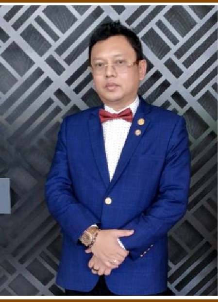
Diplomat • Business Leader • Special Envoy
Age
53 years old
Date of Birth
26 November 1972
Passport
A55322515
Marital Status
Married
Citizenship
Malaysian
Philippines Residence
Unit 309, Gramercy Residence, Century City, Salamanca St, Brgy. Poblacion, Makati City, Manila, Philippines
Philippines Office Address
Km. 12 Davao-Bukidnon Road, Catalunan Pequeño, Davao City
Malaysia Address
Wisma THIVIYA, No 13-1, Tingkat 1, Jalan Sp 2/4, Taman Serdang Perdana Seksyen 2, 43300 Seri Kembangan, Selangor
Mobile
+60 11-1167 7236
+60 11-1167 7236
farid.aquam@gmail.com
Office of the President of the Philippines
His Excellency Pehin Seri Diraja Dato Seri Farid Bin Ibrahim serves as the Special Envoy for Trade & Investment for the Southern Philippines Development Authority (SPDA), Office of the President of the Philippines. With over 34 years of expertise in property development, heavy civil engineering, construction, agriculture, tourism, business, and diplomacy, he plays a crucial role in driving economic growth and investment in the Southern Philippines.
SPDA was established by Presidential Decree No. 690 (April 22nd 1975) to dramatize the Government's serious concern for the development of Mindanao, Sulu, Tawi-Tawi including Palawan.
Advocacy for Development
Reporting to: Director General Brig. Gen. Charito B. Plaza
His Excellency was appointed as a Special Envoy For Trade And Investment to mobilize investors into Philippines from Malaysia, Hong Kong, China, Japan, Indonesia and Singapore across banking, manufacturing, and trading sectors.
His Excellency works diligently to support the Philippines Government in combating drug misuse and advocates for family-focused retreat programs.
Conferred as Honorary Member: Comandon of Special Air Unit Forces and Marine Unit Forces Indonesian National Armed Forces (TNI)
Introduction
His Excellency Pehin Seri Di Raja Dato' Seri Farid Ibrahim is a distinguished Malaysian statesman, businessman, and international economic envoy with more than 34 years of experience across infrastructure development, trade diplomacy, logistics, agribusiness, and investment facilitation. Recognised for his strategic insights, diplomatic stature, and extensive cross-border networks spanning ASEAN, the Middle East, China, and Europe, he plays a pivotal leadership role in advancing PERPENS' mission to uplift Sabah's retail, supply, and trading ecosystem.
As International Relations Board Advisor, His Excellency's appointment strengthens PERPENS' ambition to position Sabah as a regional gateway for Halal trade, food security, digital retail empowerment, and SME globalisation.
Strategic Role in PERPENS
Vision for Sabah Through PERPENS
His Excellency champions a long-term vision where Sabah becomes a competitive, internationally connected retail and supply-chain powerhouse. His strategic priorities include:
World Tower Legacy
His Excellency Pehin Seri Di Raja Dato' Seri Farid Ibrahim is a distinguished Malaysian statesman, entrepreneur, and international economic advisor whose leadership spans more than three decades across infrastructure development, energy, trade, and global diplomacy. A visionary advocate for Malaysia's strategic role on the world stage, he has earned recognition at the highest levels, including international honours such as the Anugerah Kehormatan Penerbangan TNI Angkatan Laut of Indonesia.
As Chairman of the MM1030 Tower Climb Event, His Excellency brings world-class leadership to a movement that unites sports, national pride, international friendship, and global advocacy. Appointed exclusively by Dr. Suwaibah Nasir, Malaysia's ultra-endurance icon and global peace ambassador, His Excellency plays a pivotal role in elevating Malaysia's presence in the international tower-climb circuit through the collaboration between World Tower Legacy, Yayasan Atlet Kebangsaan (YAKEB), and the World Federation of Great Towers.
A Leader of International Standing
His Excellency currently serves as:
Championing the MM1030 Vision
The MM1030 Tower Climb Initiative is more than an endurance challenge — it is a global advocacy movement led by Dr. Suwaibah Nasir, carrying the Malaysian flag to 103 iconic towers across the world. Under His Excellency's chairmanship, the initiative is positioned to become:
Exclusive Appointment by Dr. Suwaibah Nasir
Dr. Suwaibah Nasir, Malaysia's most decorated ultra-endurance athlete, personally appointed His Excellency as Chairman for MM1030 due to:
A Vision of Unity, Endurance & Global Malaysian Excellence
His Excellency champions MM1030 as a symbol of Malaysia's resilience, international friendship and peace, women's empowerment in sports, and Malaysia's ability to lead global initiatives. Under his chairmanship, MM1030 is set to inspire Malaysians from all walks of life while building a new global identity for the nation.
Visionary Leader in Energy, Maritime Logistics & Regional Economic Transformation
His Excellency Pehin Seri Di Raja Dato' Seri Farid Ibrahim is a distinguished Malaysian industrialist, statesman, and global investment advocate whose leadership spans three decades across energy, heavy civil engineering, infrastructure development, maritime logistics, and international trade diplomacy.
As Chairman of Petroleum World Trade Centre Sdn. Bhd. (PWTC), His Excellency spearheads one of Malaysia's most ambitious private-sector energy infrastructure initiatives — the 374.4-acre Umbai Melaka Free-Zone Petroleum World Trade Centre, a transformative mega-project featuring deep-sea tank farms, private jetties, ship-to-ship (STS) operations, global petroleum trading platforms, desalination and green-energy integration, and a future-ready maritime logistics ecosystem designed to position Malaysia as "The Energy Storage & Trading Gateway of the Straits of Malacca."
A Leader Shaping Southeast Asia's Energy Corridor
With over 34 years of industry experience, His Excellency brings expertise in:
Strategic Vision for PWTC
Leadership Excellence
His Excellency is widely recognized for his strategic foresight in complex mega-projects, ability to secure multibillion-ringgit investment commitments, strong relationships with government leaders across ASEAN, GCC, China, and beyond, diplomatic negotiation skills at ministerial and sovereign levels, and commitment to national development and economic upliftment.
The Chairman's Legacy
Under His Excellency's guidance, PWTC is not merely a project — it is a national and regional energy gateway, designed to strengthen Malaysia's global standing while generating long-term economic growth, employment, technological uplift, and investor confidence. His leadership embodies vision, integrity, diplomacy, industry mastery, and nation-building commitment.
His Excellency Pehin Seri Di Raja Dato' Seri Farid Ibrahim is the Executive Chairman of Lekas Takzim Sdn. Bhd., the original proponent and project company behind the Cadangan Projek Lebuhraya Bertingkat Johor Baharu–Pasir Gudang (PAGE), a 34.4-kilometre elevated highway conceived under a privatisation model to transform Johor's urban mobility and logistics connectivity.
With more than three decades of experience spanning property development, heavy civil engineering, infrastructure, trade and investment, His Excellency leads Lekas Takzim Sdn. Bhd. with a clear mission: to deliver a world-class, future-ready expressway that eases chronic congestion between Johor Bahru and Pasir Gudang, enhances port and industrial access, and supports Johor's long-term economic growth. Under his stewardship, PAGE has been meticulously developed from an early conceptual proposal into a structured concession highway project, backed by detailed technical, commercial and financial planning.
As Executive Chairman, he plays a central role in engaging Federal and State agencies, regulators, financiers and strategic partners to ensure that the highway concession is structured on a strong foundation of public–private collaboration. His leadership focuses on balancing commercial viability with national and state development objectives—optimising toll-road economics, encouraging private investment, and at the same time delivering tangible benefits in terms of reduced travel time, improved road safety and higher productivity for commuters and industries.
His Excellency also brings to the project his wider regional and diplomatic exposure in trade and investment, enabling Lekas Takzim Sdn. Bhd. to position PAGE as more than just a highway. Under his direction, the project is framed as a strategic economic corridor—unlocking new growth areas, catalysing adjacent developments, and strengthening Johor's role as a dynamic gateway within the broader Malaysian and ASEAN transport network.
Respected for his strategic vision, negotiation skills and ability to align diverse stakeholders towards a common goal, His Excellency Pehin Seri Di Raja Dato' Seri Farid Ibrahim stands as the driving force behind Lekas Takzim Sdn. Bhd.'s commitment to deliver the Lebuhraya Bertingkat Johor Baharu–Pasir Gudang as a landmark concession highway serving the people and economy of Johor for generations to come.
Leading the team in venturing into renewable green energy using the combination of solar and hydrogen technology, primarily in The Philippines. Ongoing discussions and implementations are advancing sustainable energy solutions.
Licensed Virtual Asset Service Provider (Type A: Fiat ↔ Virtual Currency Exchange) - Authorized by Bangko Sentral ng Pilipinas (BSP)
Executive Summary
His Excellency Pehin Seri Di Raja Dato' Seri Farid Ibrahim is a distinguished regional economic strategist, financier, and technologist whose leadership spans over 34 years across infrastructure, trade, digital transformation, and cross-border financial systems.
As President of Virtual Currency Philippines Inc., a BSP-licensed Type A Virtual Currency Exchange (VCE), H.E. Dato' Seri Farid provides strategic guidance to one of the Philippines' pioneering platforms enabling regulated conversion between fiat currency and virtual digital assets. His role is anchored on strict adherence to BSP Circular No. 944, RA 9160 (AMLA), KYC/AML/CFT compliance frameworks, and emerging global standards in virtual-asset governance.
His appointment strengthens the company's position as a trusted institutional gateway for blockchain-driven financial inclusion, halal-compliant fintech innovation, and digital economy growth within the Philippines and the ASEAN region.
Leadership Vision in Virtual Asset Transformation
As President, H.E. Dato' Seri Farid Ibrahim champions a mission to build a secure, transparent, and future-ready virtual currency ecosystem for the Philippines, focusing on:
Strategic Role within Virtual Currency Philippines Inc.
H.E. Dato' Seri Farid provides leadership across several mission-critical areas:
Leadership in Regulatory & Risk Governance
Under H.E. Dato' Seri Farid's presidency, the organization enforces:
Advancing the Philippines' Digital Economy
H.E. Dato' Seri Farid's leadership aligns with the national direction of:
Commitment to Integrity, Innovation & Public Trust
H.E. Dato' Seri Farid champions the principles of accountability and transparency, consumer protection and data security, ethical innovation, investor confidence, and regulatory cooperation with BSP and AMLC. His stewardship ensures that the exchange remains a trusted, compliant, and future-ready institution within the Philippines' evolving financial ecosystem.
Leadership in Precious Metals & Digital Asset Economy
As President of Precious Metal Exchange Philippines Inc. since October 2017, H.E. Dato' Seri Farid has been at the forefront of modernizing how Filipinos invest in physical precious metals. His visionary leadership transformed the company into a regulated, compliant, and innovative digital trading platform, making gold and silver accessible, liquid, and secure for retail and institutional investors alike.
The company operates a peer-to-peer precious metals exchange under a 24/7 live online marketplace structure, offering secure storage, vault services, and transparent pricing. Backed by internationally recognized mints and adherence to strict purity standards, the platform ensures integrity and investor confidence, serving as a national alternative to traditional gold trading and storage methods.
His stewardship has been critical in establishing compliance frameworks aligned with BSP regulations, AML/CFT laws, and best practices for physical asset tokenization. Under his leadership, the platform has expanded its product range to include investment-grade bullion, facilitating wealth preservation and portfolio diversification for Filipino households, OFWs, and corporate treasuries.
Strategic Contributions to National & Regional Economic Growth
H.E. Dato' Seri Farid has positioned the company as a strategic contributor to the Philippine financial ecosystem, particularly in:
His leadership also aligns with the broader agenda of modernizing Philippine financial infrastructure, particularly through the digitalization of physical asset ownership and promoting trust in non-traditional investment vehicles.
A Visionary Driving Trust, Stability & Modernization
H.E. Dato' Seri Farid's approach to precious metals trading reflects his unwavering commitment to:
Through his leadership, the platform has gained the trust of thousands of Filipino investors who now view gold and silver as practical, tradable assets rather than inaccessible luxury goods.
Personal Distinction & Honours
Beyond his business acumen, H.E. Dato' Seri Farid's international diplomatic standing enhances his credibility as a leader in precious metals and financial services. His role as His Majesty The King's Special Envoy to ASEAN & The Pacific, combined with his appointments as International Relations Board Advisor for PERPENS and Chairman for multiple organizations (MM1030, PWTC), positions him as a figure of global influence, bridging government, private enterprise, and international diplomacy. His dual expertise in diplomacy and commerce allows him to advocate for fair trade practices, financial transparency, and cross-border collaboration, strengthening the Philippines' role in the global precious metals supply chain.
Conclusion
H.E. Dato' Seri Farid's presidency of Precious Metal Exchange Philippines Inc. exemplifies his dedication to economic innovation, financial security, and investor empowerment. By establishing a regulated, transparent, and accessible precious metals marketplace, he has contributed to the Philippines' financial modernization agenda, promoted wealth preservation strategies, and elevated Manila's standing as a regional trading hub. His leadership continues to ensure that the exchange operates with the highest levels of integrity, compliance, and customer trust, making it a cornerstone of the country's alternative investment landscape.
Comprehensive Business Solutions
World leader in the design, construction, installation, and commissioning of palm oil mills. BESTEEL has constructed more than a hundred palm oil mills across Malaysia, Indonesia, Thailand, Cambodia, Papua New Guinea, Cameroon, Sierra Leone, Congo, Ghana, Sao Tome, and Brazil.
Malaysian-based company specializing in defense industry design and smart security solutions. Drawing from accumulated experiences from Middle Eastern events, the company provides innovative solutions for risk response and protection.
Additional Operations: Exclusive river mouth sand operator at Sg. Tiram, Johor for exports (February 2017 - Present)
Leading business planning and technical advisory for major agricultural projects including the Kazakhstan Ministry of Agriculture (NAK LLP) Onion Project for Pre and Post Harvesting (2015), and establishing HALAL ABATTOIR for the cattle industry.
International Recognition: Won Gold Medal at the 27th International Award For Quality In Food & Beverages in Madrid, Spain (October 2011) for catfish farming livelihood project in Malaysia.
Pioneered Industrial Building Technology using Light Gauge Steel and concrete wall and flooring structures, with most projects implemented in the Philippines.
1993-1995
Brunel University, United Kingdom
1993-1995
Chartered Institute of Builders (CIOB) United Kingdom
1991-1992
Ungku Omar Polytechnic, Malaysia
+63 928 038855
+63 917 5972573
+63 917 5829895
+63 917 1777669
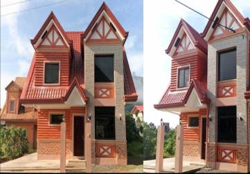
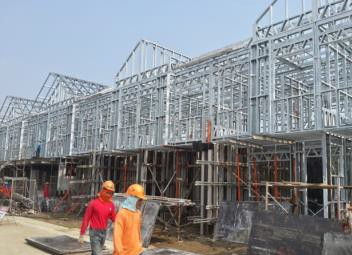
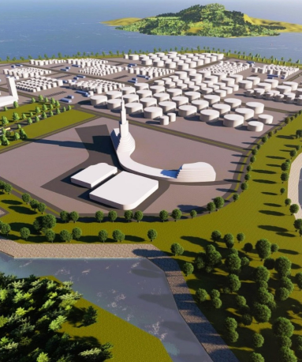
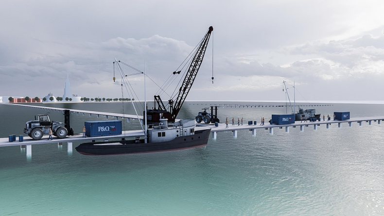
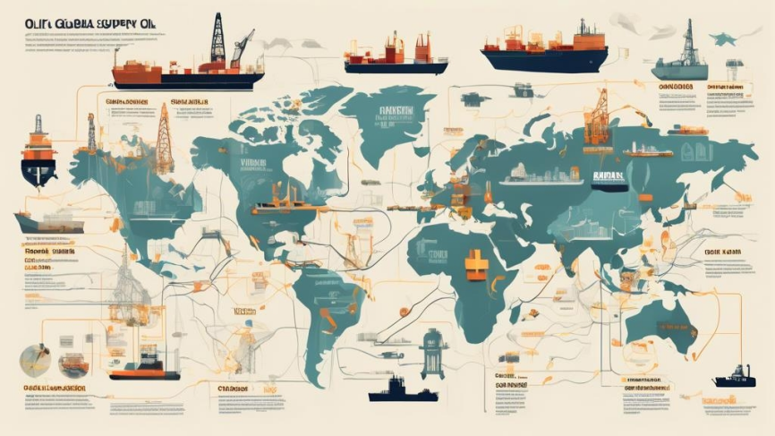
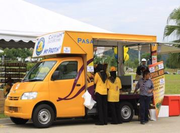
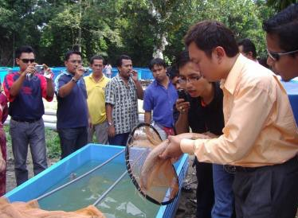
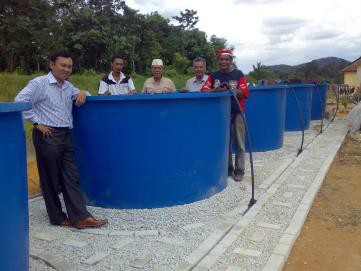
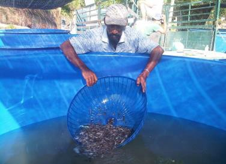
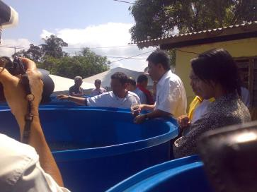
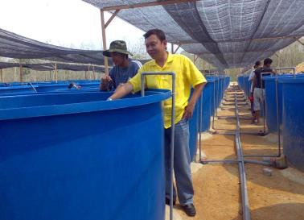
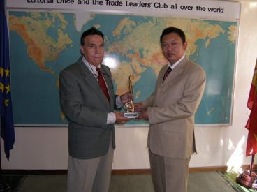
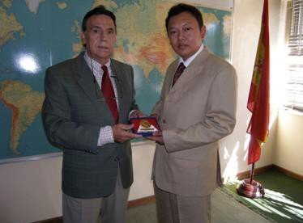
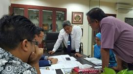
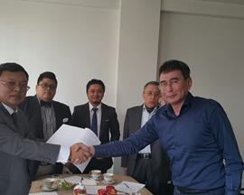
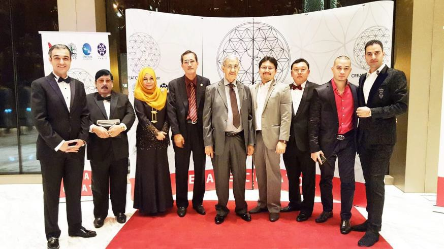
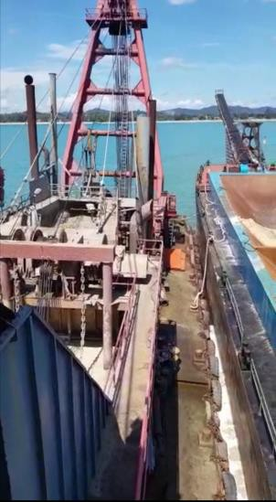
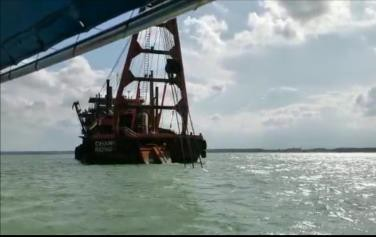
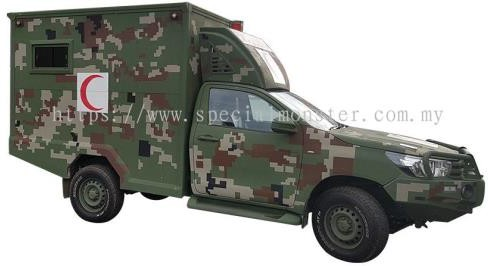
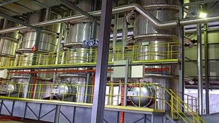
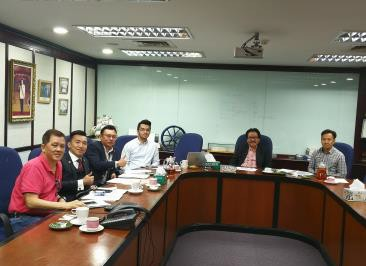
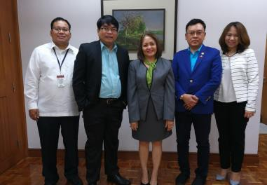
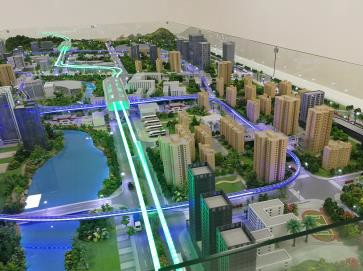
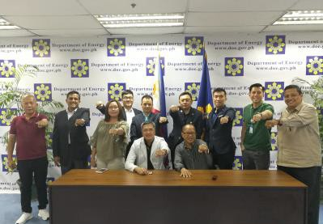
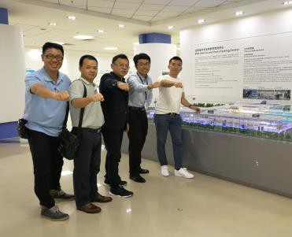
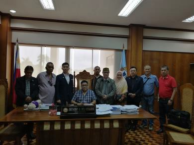
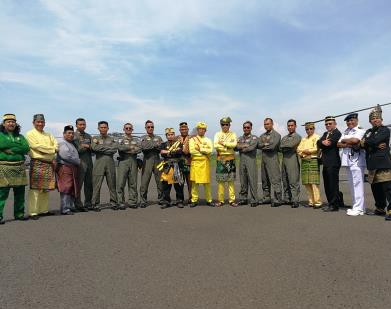
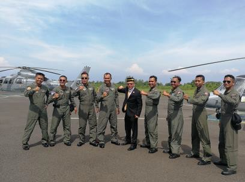
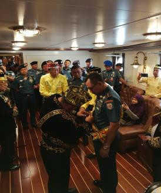
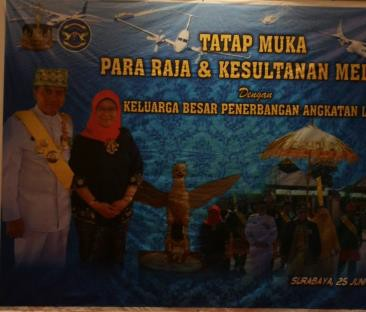
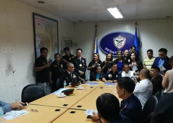
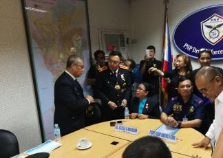
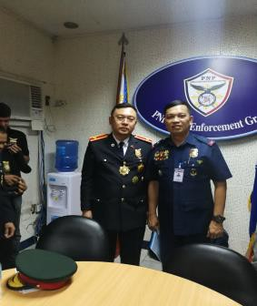
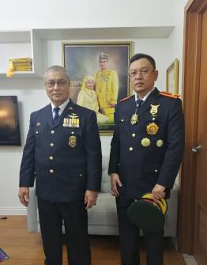
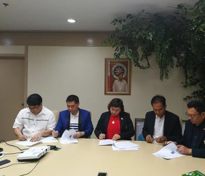
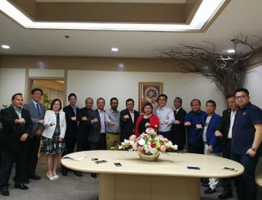
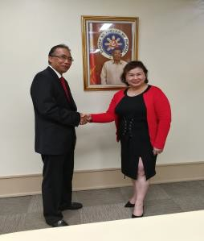
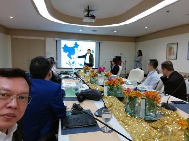
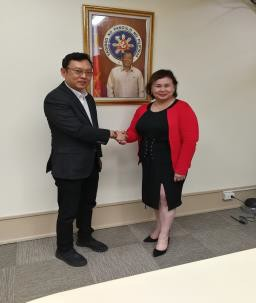
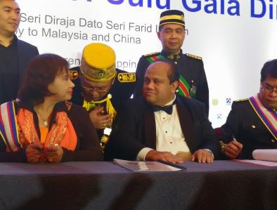
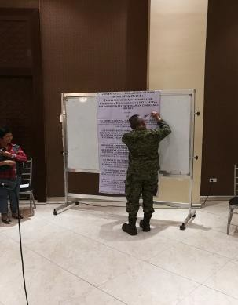
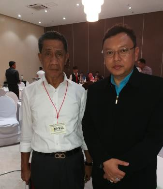
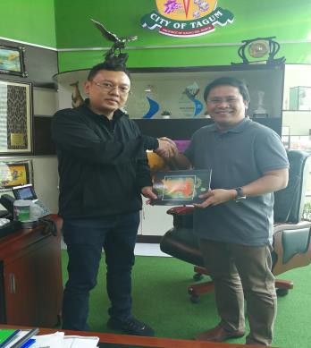
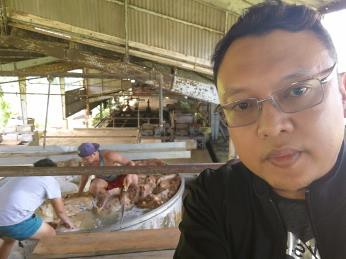
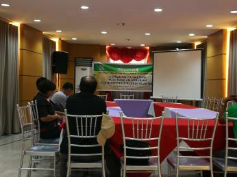
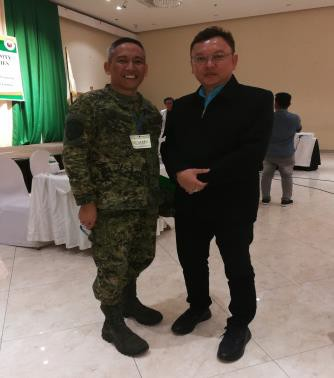
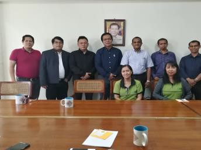
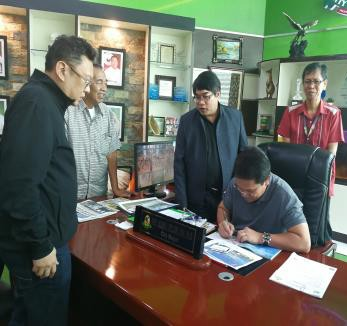
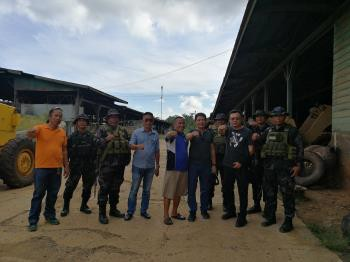